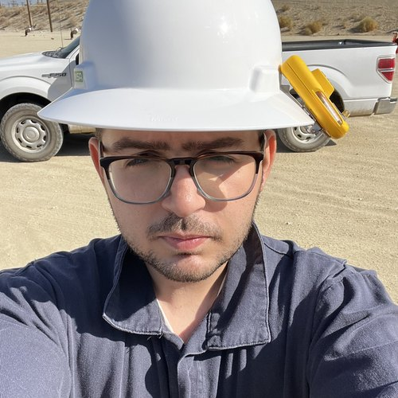

Nima Daneshvarnejad
Ph.D. Petroleum Engineering — University of Southern California
Phone: (310) 290-6968 •
Email: nimadane@usc.edu •
U.S. Citizen
Summary
Ph.D. with experience in oil and gas risk assessment, management, and energy
business model creation. Hands-on expertise in methane emission monitoring, IoT
sensor deployment, and computational fluid dynamics modeling for plugged and
abandoned wells. Skilled in carbon credit markets, including both voluntary and
cap-and-trade frameworks. Experienced in AI-driven time series prediction modeling
using Closed-form Continuous-time (CfC) and Liquid Time-Constant (LTC) networks.
Seeking to enhance methane emission inventory accuracy, build legacy asset
management models, and deliver AI-based solutions for oil and gas legacy assets
across the U.S.
Focus Areas
Risk assessment, energy assets life cycle analysis, emission monitoring,
physically-constrained modeling, computational fluid dynamic modeling, well and
legacy assets integrity, airborne emission imaging, machine learning, time series
prediction.
Education
- University of Southern California, Los Angeles, CA — Ph.D. Petroleum Engineering (Chevron Fellowship), April 2026.
Research focus: AI-driven methane emission monitoring and reservoir simulations.
- University of Southern California, Los Angeles, CA — M.S. Petroleum Engineering, May 2022.
- Sharif University of Technology — B.S. Petroleum Engineering, June 2018.
Industry Experience
- Developing CO₂ emission measuring methods for Berry Corporation steam generators and co-generation plants.
- Optimized steam and chemical flood processes for Cymric and Midway-Sunset heavy oil fields, enhancing recovery efficiency by 10% (in collaboration with Chevron).
- Consulted for RMI on the orphaned and abandoned wells explainer for voluntary carbon credit markets.
- Consulted for the University of Chicago Energy Policy Institute in the Democratic Republic of Congo to set up air quality monitoring infrastructure and build predictive models (awarded by the University of Chicago Energy Policy Institute).
Publications
MDPI Environments 2026 (under revision)
A New Method for Monitoring System for Methane Detection from Plugged and Unplugged Abandoned Wells Using Smart Static Canopies.
DOI: 10.20944/preprints202606.0009.v1 (2026) —
View Paper
SPE Western Regional Meeting
AI-Driven Computational Fluid Dynamic Simulations and Experiments to Predict Methane Emission: Applications to Idle and Abandoned Wells (in collaboration with Beyond Limits).
SPE-224153-MS (2025) —
View Paper
SPE Canadian Energy Technology Conference
A Method for Detection of Methane Leaks from Idle and Orphaned Wells Using High-Precision Sensor and a Ventilation Canopy (in collaboration with Beyond Limits).
SPE-218022-MS (2024) —
View Paper
SPE Western Regional Meeting
Monitoring Low and Intermittent Methane Emission from Orphaned and Idle Wells (in collaboration with Beyond Limits).
SPE-218839-MS (2024) —
View Paper
SPE Western Regional Meeting
The Integrity of Idle and Abandoned Wells in California.
SPE-218887-MS (2024) —
View Paper
Presentations
- 4th AAPG Orphan, Abandoned, Idle, and Marginal Wells Conference —
From Leak Rate to Leak Profile: AI-Driven Monitoring and Predictive Modeling of Methane Emissions from Orphaned and Abandoned Wells. Presenter (2026).
- 2nd Annual Orphan, Idle and Marginal Wells California Conference —
Using Carbon Markets to Scale Monitoring and Remediation of Legacy Wells in California. Presenter and panelist (2026).
- San Joaquin Well Logging Society —
Errors in Emission Measurement from Idle and Orphaned Wells. Presenter (2025).
- 3rd AAPG Orphan, Abandoned, Idle, and Marginal Wells Conference —
Abandoned Wells Methane Emission Monitoring Solutions. Presenter (2025). Working with State and Federal Agencies. Panelist (2025).
Technical Skills
- Computational modeling: COMSOL Multiphysics (CFD), MATLAB, Latin Hypercube Sampling, multiphase flow simulation.
- ML / AI: Python, Liquid Time-Constant Networks, agent-based modeling, Keras, GRU networks, Fourier Neural Operators, time series forecasting, image recognition.
- Data & tools: Git, LaTeX, IoT sensor integration, inverse dispersion modeling using satellite emission data processing.
Research Projects
Ph.D. thesis: “Monitoring and Detection of Methane Leaks From Plugged and Abandoned Wells Using MPS Sensors and Ventilation Canopies.”
- Developing Liquid Time-Constant and Fourier Neural Operator machine learning algorithms for time series prediction.
- Methane emission monitoring design enhancement via machine-learning-assisted multiphase computational fluid dynamic simulation (in collaboration with Beyond Limits).
- Locating historical wells and regulatory documents analysis.
- Methane emission satellite data modeling using machine learning.
Honors & Awards
- Chevron Master-level scholarship (2020–2022)
- USC Viterbi fellowship (2022)
- ECET fellowship (2023)
- SPE LA Basin Section Fellowship (2023)
- SPE LA Basin Section Fellowship (2024)
- SPE LA Basin Section Fellowship (2025)
- SPE NA Region Best Ph.D. Student Paper Award (2026)
- Daneshy Award recipient (2026)
Leadership
- USC SPE Student Chapter President (2021–2022) — collaborated with energy scholars; managed SPE events, talks, monthly newsletter, and field trips.
- USC SPE Student Chapter Vice President (2022–2024) — managed the chapter's relationship with the SPE LA Basin Section.
- SPE LA Basin Section Young Professionals Program Officer (2022–2024) — organized events for early-career industry professionals.
- Persian Academic and Cultural Student Association (2021–2024) — promoted Persian art and culture within the greater USC community.
Professional Societies
- Society of Petroleum Engineers (SPE) — member since 2013.
- American Geophysical Union (AGU) — member since 2023.
- American Association of Petroleum Geologists (AAPG) — member since 2025.
References